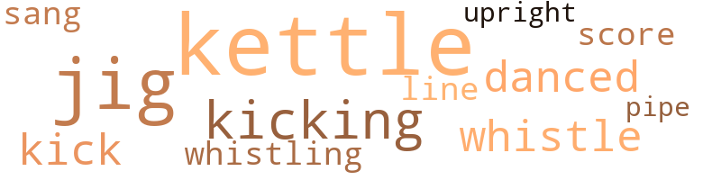
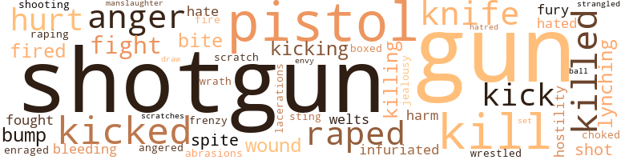

Naked Truth, by Farrell, John (1961)
30 music-related terms matched in this text.
Most frequent terms in this topic: kettle (9); jig (5); kicking (3); whistle (2); danced (2)
dance.v.03
Definition: skip, leap, or move up and down or sideways
| word | sentence |
|---|---|
| danced | " I 'm going in by the back levee road , " Jasper explained to Clyde as he wrestled with the steering wheel that danced crazily each time the front wheels hit a bump in the corduroy road . |
| danced | Weird shadows from the licking flames danced across her almond-skinned face as she lifted her tear-stained eyes . |
jig.n.01
Definition: music in three-four time for dancing a jig
| word | sentence |
|---|---|
| jigs | " What do you think we ought to do to these jigs for helping him get away ? " he asked , nodding his head toward the bed . |
| jig | " I 'm going to break this jig in , " Roy said lustfully . |
| jig | " I been thinking for quite a spell how it 's a crying shame for a pretty gal like you to be wasting it all on them jig bucks , " he said in a harsh whisper . |
| jig | " I 'm going to castrate this jig , " he said sadistically . |
| jig | " The butt on that jig , " he said angrily . |
| jig | ... I was plowing a team of mules over across the levee for old man Carter , and this here jig kept coming by carrying water to the nigger choppers in the next patch . |
kettle.n.04
Definition: a large hemispherical brass or copper percussion instrument with a drumhead that can be tuned by adjusting the tension on it
| word | sentence |
|---|---|
| kettle | Sophie , Tom Cat 's wife , was in the front yard with a broom handle in her hand , stirring clothes in a wash kettle , and several younger Negro children , Lorie 's smaller brothers and sisters , were playing all around her in the front yard . |
| kettle | Two of the youngest ones were half-naked from the waist down , and they sat among the black cinders and ashes scattered around the wash kettle and played with the burnt nails which had once been in the wood used by Sophie to fire the kettle . |
| kettle | Two of the youngest ones were half-naked from the waist down , and they sat among the black cinders and ashes scattered around the wash kettle and played with the burnt nails which had once been in the wood used by Sophie to fire the kettle . |
| kettle | Sophie dropped the broom handle in the blackened kettle and looked with curious interest when Junior ran by her , stumbled up the steps , and sank into a sitting position on the edge of the porch . |
| kettle | He got up from his chair , descended the steps slowly , and walked over to the kettle where Sophie had been watching everything with eager interest . |
| kettle | The red-hot coals were still glowing under the wash kettle when they entered the yard , and a thin column of white smoke drifted up from the dying embers and disappeared in the branches of the tall , black walnut trees which dotted the front yard . |
| kettle | " Let 's throw some of this furniture out on them coals under the wash kettle and give 'em a little something to think about the next time they get any notions about helping a runaway nigger , " Jasper said . |
| kettle | Jasper ordered the whole family out on the front porch , and he and Clyde quickly carried out the table and some chairs and dumped them around the kettle . |
| kettle | The furniture around the wash kettle had been reduced to smoldering ashes , and the same column of white smoke curled upward and disappeared through the limbs of the walnut trees . |
kick.v.04
Definition: kick a leg up
| word | sentence |
|---|---|
| kicking | The two girls got in the front seat with Jasper after he pushed the dogs into the back , and Clyde climbed in the rear , pushing and kicking at the anxious hounds to make a place for himself . |
| kicking | " Get away ! " he ordered , kicking out at them . |
| kicking | " I said open up , " he called again , kicking the door harder than before . |
| kick | " You come one more step closer , and I 'll kick you where it 'll hurt the most , " she warned through gritted teeth . |
| kick | Margie folded her hands back behind her head and shook off lier shoes so that she could kick her bare feet in the cotton seed . |
pipe.n.04
Definition: a tubular wind instrument
| word | sentence |
|---|---|
| pipe | My fields will be so chock-full of citrons this fall , you wo n't even be able to pull a sack down the middle . . . . " Ervin Tucker nodded sympathetically and gripped a pipe stem between his teeth , but Ben had rushed on by them before he could hear his comment on Roy 's complaint . |
score.n.02
Definition: a written form of a musical composition; parts for different instruments appear on separate staves on large pages
| word | sentence |
|---|---|
| score | I got an old score to settle with that whole damn Baxter bunch , and I 'm fixing to see that it 's done up right . |
sing.v.02
Definition: produce tones with the voice
| word | sentence |
|---|---|
| sang | He was aware now of the croaking frogs and the chirping crickets which sang in unison and brought an atmosphere of calmness over the slough . |
tune.n.01
Definition: a succession of notes forming a distinctive sequence
| word | sentence |
|---|---|
| line | Roy ignored him and continued his line of teasing . |
upright.n.02
Definition: a piano with a vertical sounding board
| word | sentence |
|---|---|
| upright | " I 'd hate for Edna to find . . . " She sat upright and jerked away from him in disgust . |
whistle.v.01
Definition: make whistling sounds
| word | sentence |
|---|---|
| whistling | He walked around from behind the counter and edged over toward her , looking out the window and whistling softly between his teeth as if his attention had been attracted to something over in front of the post office . |
| whistle | Clyde gave a long , low whistle . |
| whistle | Bernie asked with a long , low whistle . |
200 violence-related terms matched in this text.
Most frequent terms in this topic: gun (22); shotgun (21); pistol (20); kill (16); kicked (9)
abrasion.n.01
Definition: an abraded area where the skin is torn or worn off
| word | sentence |
|---|---|
| abrasions | He was about to collapse from nervous fatigue and physical exhaustion , and his bare feet were bleeding from several cuts and stone abrasions . |
| scratch | She crouched like a cornered tiger as his hands reached out for her , and she began to slap and scratch as they struggled together . |
| scratches | " Say , you look like you run right through a barbwire fence , " he said , pointing a finger at the scratches on Jasper 's cheek . |
anger.n.01
Definition: a strong emotion; a feeling that is oriented toward some real or supposed grievance
| word | sentence |
|---|---|
| anger | All you have to do is be nice to me this afternoon and . . . " The anger flashed in her eyes as she listened to him build up his filthy proposal . |
| anger | As he thought about it and remembered what she had said to him , he had to bite his tongue and clench his fists tightly to release his anger . |
| anger | Even his anger at that moment did not cause him to lose his burning desire for her . |
| anger | After what they had already done , he did not doubt that they would go to even greater extremes to release their anger on him . |
| anger | His anger was due chiefly to jealousy , because the welfare checks provided the farm laborers with an element of independence . |
| anger | The anger flashed up within him as she mocked him , but he sought immediately to control it . |
| anger | His natural hatred for Negroes and the added anger caused by the citron vines which his Negro laborers had left in his cotton fields made him anxious to move into action . |
anger.v.02
Definition: become angry
| word | sentence |
|---|---|
| angered | This angered him , causing him to kick his legs through the green plants so that he would shake off as many of the bolls as possible . |
bleeding.n.01
Definition: the flow of blood from a ruptured blood vessel
| word | sentence |
|---|---|
| bleeding | Tom Cat walked slowly through the front door , holding his hand over the bleeding wound on his head . |
| bleeding | Jasper stared at the bleeding Negro for a long time . |
box.v.03
Definition: engage in a boxing match
| word | sentence |
|---|---|
| boxed | Jasper jerked the door open and boxed him on the ear . |
bump.n.01
Definition: a lump on the body caused by a blow
| word | sentence |
|---|---|
| bump | " I 'm going in by the back levee road , " Jasper explained to Clyde as he wrestled with the steering wheel that danced crazily each time the front wheels hit a bump in the corduroy road . |
| bump | The girls sat quietly beside him , bouncing sometimes almost to the roof of the car when Jasper took a bump too fast . |
| bumps | He sat stiffly behind the steering wheel and tried to control it with both hands when the front wheels hit one of the many bumps in the rough road . |
craze.n.02
Definition: state of violent mental agitation
| word | sentence |
|---|---|
| frenzy | Shortie was in the front seat panting with frenzy . |
draw.v.23
Definition: pull (a person) apart with four horses tied to his extremities, so as to execute him
| word | sentence |
|---|---|
| draw | She tried hard to draw comfort from the preacher 's sermon , but it was all too vague for her to remember . |
enrage.v.01
Definition: put into a rage; make violently angry
| word | sentence |
|---|---|
| enraged | Her insinuation enraged him , and he was cursing himself for not bashing her face in with the pistol , but some strange impetus made him want to argue it out with her . |
envy.n.01
Definition: a feeling of grudging admiration and desire to have something that is possessed by another
| word | sentence |
|---|---|
| envy | A pair of well-formed breasts filled the blouse in a way to arouse envy in probably every other female in the county . |
fight.n.05
Definition: a boxing or wrestling match
| word | sentence |
|---|---|
| fight | " I was hoping you 'd get a little fight back in you . |
| fight | " It would n't be nothing at all if I just pushed you back on the ground and dicked you without you putting up a little fight . " |
| fights | The fights were out in the house , and he recognized immediately the purpose in doing this . |
| fight | Roy was younger and stronger than he was , and he entertained no hope of whipping him in a fist fight . |
| fight | " Well , I like to see a yellow jacket with a little fight in her . |
fight.v.02
Definition: fight against or resist strongly
| word | sentence |
|---|---|
| fought | He fought with every ounce of strength in his body 's fibers to pull himself through the sweeping onslaught , but after he had traveled about one hundred yards from land , he realized that his quickly tiring muscles would never be able to carry him safely to the other side . |
| fought | The brassière snapped away easily with one hard jerk of the hand , and he fought hard against clawing nails to kiss her breasts . |
fury.n.01
Definition: a feeling of intense anger
| word | sentence |
|---|---|
| fury | Enraged with fury , he picked up one of the drawers and hurled it through the only window in the room . |
| fury | As the fire spread rapidly , Bernie realized that it was no ordinary campfire , and soon he recognized that the dry marsh grass in the basin was blazing with hot fury . |
gag.v.06
Definition: cause to retch or choke
| word | sentence |
|---|---|
| choked | If the careless weeds and crab grass choked out his crops , Jasper always found Tom Cat 's cotton as clean as a pin . |
gun.n.01
Definition: a weapon that discharges a missile at high velocity (especially from a metal tube or barrel)
| word | sentence |
|---|---|
| gun | He done told Mr. Jasper how he seen Junior running out of the house , and Mr. Jasper 's coming after him with a gun and a bunch of hunting dogs . |
| gun | The dogs were more excited than ever when they saw Clyde loading his gun , and Jasper had to push one of them back with his foot so that he could close the door . |
| gun | She set it on a table in front of him , and he put his gun in his pocket to lift the globe and light the wick . |
| gun | " Now , where 's that Chicago nigger ? " he said , pulling the gun out of his pocket . |
| gun | Jasper whirled quickly and struck him across the temple with the gun butt . |
| gun | He waved the gun threateningly . |
| gun | He waved the gun threateningly at the trembling Negroes . |
| gun | He raised the gun and threatened her again . |
| gun | " You was n't figgering on using this on us , was you ? " he asked , pointing the gun between Tyson 's widening eyes . |
| gun | A man just needs a gun around for times like that , but I sho did n't aim to bother you white folks with it . " |
| gun | Roy held the gun there a few seconds , then said , " Make sure you remember this ' fore you get any more ideas about shooting a white man . " |
| gun | He pressed the gun barrel against her nose . |
| gun | " You go on in the next room and hold that gun on the others . " |
| gun | Maybe this 'll learn you not to threaten a white man with a gun . " |
| gun | " You know who I mean , " he replied , thrusting the gun deeper into the pit of his stomach until Junior thought that it was surely pressing against the front of his spinal column . |
| gun | Bernie thrust inward on the gun , and the trembling mulatto boy doubled over in pain . |
| gun | He rammed the gun deeper into his stomach . |
| gun | He took a step backwards and motioned with the gun for him to sit down on the cottonwood stump . |
| gun | " Just to make sure , " he said , smiling as he lowered the gun again . |
| gun | Jasper walked right past Bernie Stokes and pistol whipped Junior in the face with the barrel of his gun . |
| gun | The gun jumped once , then again , then again , and then again , until the magazine was empty . |
| gun | The birds roosting in the trees along the creek flew away as the gun roared . |
hate.n.01
Definition: the emotion of intense dislike; a feeling of dislike so strong that it demands action
| word | sentence |
|---|---|
| hatred | His natural hatred for Negroes and the added anger caused by the citron vines which his Negro laborers had left in his cotton fields made him anxious to move into action . |
hate.v.01
Definition: dislike intensely; feel antipathy or aversion towards
| word | sentence |
|---|---|
| hate | " I 'd sure hate to leave him behind , " Clyde said . |
| hated | He hated to admit that Roy had been right about something , although he was glad to know that his prey was still on the Mississippi side of the river and that the trail had been picked up again . |
| hate | " I 'd hate for Edna to find . . . " She sat upright and jerked away from him in disgust . |
| hated | For the last five years he had bragged continually about how Margie was the prettiest girl in Mississippi , and he hated to think that a mulatto girl was now living in the same county who was so pretty that even he had to acknowledge that her beauty surpassed Margie 's . |
hostility.n.01
Definition: a hostile (very unfriendly) disposition
| word | sentence |
|---|---|
| hostility | " Well , now , Lisa , " he said , more at ease as her hostility seemed to disappear . |
| hostility | But he was nevertheless glad to see that her hostility was becoming less and less obvious . |
infuriate.v.01
Definition: make furious
| word | sentence |
|---|---|
| infuriated | There was no fright in her eyes , and he was infuriated at her nerve and open defiance of him . |
| infuriated | This infuriated Bernie when he heard about it . |
injury.n.01
Definition: any physical damage to the body caused by violence or accident or fracture etc.
| word | sentence |
|---|---|
| harm | " I started it , but I did n't mean to do no harm . " |
| harm | " No harm , " Bernie repeated with a grunt . |
jealousy.n.01
Definition: a feeling of jealous envy (especially of a rival)
| word | sentence |
|---|---|
| jealousy | His anger was due chiefly to jealousy , because the welfare checks provided the farm laborers with an element of independence . |
kick.v.04
Definition: kick a leg up
| word | sentence |
|---|---|
| kicking | The two girls got in the front seat with Jasper after he pushed the dogs into the back , and Clyde climbed in the rear , pushing and kicking at the anxious hounds to make a place for himself . |
| kicking | " Get away ! " he ordered , kicking out at them . |
| kicking | " I said open up , " he called again , kicking the door harder than before . |
| kick | " You come one more step closer , and I 'll kick you where it 'll hurt the most , " she warned through gritted teeth . |
| kick | Margie folded her hands back behind her head and shook off lier shoes so that she could kick her bare feet in the cotton seed . |
kick_back.v.02
Definition: spring back, as from a forceful thrust
| word | sentence |
|---|---|
| kick | This angered him , causing him to kick his legs through the green plants so that he would shake off as many of the bolls as possible . |
| kicked | He kicked the door open with his heavy work shoe and turned to Clyde before he went inside . |
| kicked | She kicked momentarily , then began to cry quietly as he laid her down on the dead leaves and twigs which had accumulated under the underbrush . |
| kicked | He kicked Junior 's foot out of the way and slammed the door quickly , and the quaking mulatto boy heard the inside door latch drop into place . |
| kick | Spot jumped out when he opened the door , and Clyde had to kick him in the flanks to get him back in the car . |
| kicked | Jasper kicked the dirt in disgust . |
| kicked | He climbed the two rickety steps and kicked the back door with his shoe . |
| kick | " And you better open up this goddamn door ' fore I kick it plumb off the hinges . " |
| kicked | Clyde followed eagerly after him , and Jasper kicked the dirt in disgust and wandered off slowly in the same direction . |
| kicked | He kicked out at Spike and Shortie . |
| kicked | Then he kicked him hard in the side and walked back over to the fire . |
| kicked | He paused a moment and kicked at the dirt as if he were embarrassed about what he had said . |
| kick | He had to kick him in the face twice ' fore he could put him the rest of the way down . " |
kill.v.10
Definition: cause the death of, without intention
| word | sentence |
|---|---|
| kill | " If I take the whole bunch of you along , somebody 'll get trigger happy and maybe kill him ' fore I can get my hands on him . |
| killed | I know your mammy would lots rather have Junior leave and go to Chicago instead of staying here and getting killed by them white men . " |
| kill | " I just run off a bunch of men up at the store that wanted to get in on it , 'cause I do n't want no trigger-happy bastard to kill the son-of-a-bitch ' fore I can get my hands on him . |
| kill | A runaway nigger 'll take to the creeks and swamps to try to kill his trail , but I ai n't seen anything yet that could fool Elmer Sutton 's dogs . |
| kill | " I ought to kill you , " he snarled . |
| killed | " I do n't know why I have n't killed you before now . |
| kill | " You really aiming to kill him , if you catch him ? " he asked eagerly . |
| killed | But by the time I finish with him , he 'll wish I had 've killed him . " |
| killed | " I 've already killed me seven niggers , and I would n't blink an eye to keep from killing the whole bunch of you . |
| killing | " I 've already killed me seven niggers , and I would n't blink an eye to keep from killing the whole bunch of you . |
| killing | " Come on , let 's quit killing time . " |
| kill | He had seen fleeing criminals do this in the movies , and he knew that this would kill his trail for the dogs and give him a good chance of making it to the state line which was now only a few miles to the north . |
| killing | He would follow the creek for about two miles to make sure of killing the trail ; then he would cut across the fields . |
| kill | The fire would also serve to kill his trail on the opposite side of the slough . |
| kill | " That 'll kill off half the cottontails down there . " |
| kill | " Do n't you know that 'll kill off all the cottontails ? " |
| kill | " They 'll kill me when they get here , " Junior said , as his lower lip began to twitch and tremble . |
| kill | " I ought to kill you ! |
| kill | I ought to kill you right now ! " |
| kill | " You cai n't hardly kill a nigger . |
| kill | You can kill me if you want to , but that wo n't take away the big lie Miss Margie told on me . |
| killed | Then he returned home and reported to the sheriff that Jasper Hankins and Clyde Litton had killed his grandson . |
| killed | Maybe they 'd 've killed me with him , and we 'd be together now just like we promised Mamma . " |
| kill | " Nobody seen Mr. Jasper kill Junior , and that 's going to be something in his favor . |
| kill | I 've seen white folks kill the colored right out in the broad daylight , and nothing was ever done about it . |
| killed | " But I 'll know that his daddy killed Junior . |
| killed | " But I 'd get killed for it . |
knife.n.02
Definition: a weapon with a handle and blade with a sharp point
| word | sentence |
|---|---|
| knife | " We could leave him a knife , and when he got ready to go home , he could cut it off . |
| knife | " Y' all can piddle around all you want to , but I 'm going to fix him up good and proper , " Roy said , pulling a knife from his pocket . |
| knife | " What 're you figuring on doing with that knife . " |
| knife | " Now , you put up that knife , " Jasper ordered . |
| knife | The mulatto boy was almost unconscious , but the sharp cutting edge of the knife revived him quickly , and his shrill screams echoed through the woods before he lapsed once again into unconscious silence . |
| knife | A pool of thick , red blood , which had poured from Junior 's wounds inflicted both by the knife and the beating , surrounded the base of the tree . |
| knife | Clyde opened his knife and cut at the stiff ropes . |
laceration.n.01
Definition: a torn ragged wound
| word | sentence |
|---|---|
| lacerations | The blood gushed out of several facial lacerations and a broken nose and formed a dark pool on the ground around his head . |
lynching.n.01
Definition: putting a person to death by mob action without due process of law
| word | sentence |
|---|---|
| lynching | " If any of you-uns is lying to me , we 're going to have the biggest nigger lynching this county 's ever seen . " |
| lynching | When you 've seen one nigger lynching , you 've seen 'em all . " |
| lynchings | Tom Cat was more dubious than his granddaughter , because he had lived all of his many years in the South and was familiar with lynchings . |
malice.n.01
Definition: feeling a need to see others suffer
| word | sentence |
|---|---|
| spite | In spite of his past years of prosperity , he had never broken the habit of rolling his own - a habit acquired during his farming days when he had to skimp throughout the year to buy his smoking tobacco . |
| spite | " I can be good to a man in spite of my age - just as long as he treats me right and gives me the things I want . " |
manslaughter.n.01
Definition: homicide without malice aforethought
| word | sentence |
|---|---|
| manslaughter | The men were arrested and held over on charges of manslaughter , but Judge Tyler released them until the trial on five-hundred-doll a r bond . |
musket_ball.n.01
Definition: a solid projectile that is shot by a musket
| word | sentence |
|---|---|
| ball | His blue , faded ball cap dropped from his head as he ran from the seed house and headed toward the road . |
open_fire.v.01
Definition: start firing a weapon
| word | sentence |
|---|---|
| fire | Two of the youngest ones were half-naked from the waist down , and they sat among the black cinders and ashes scattered around the wash kettle and played with the burnt nails which had once been in the wood used by Sophie to fire the kettle . |
| fired | You 'll get fired and wo n't have a job no more . |
| fired | Jasper jerked the shotgun from Clyde 's grasp and fired it through one of the front windows . |
| fired | Jasper ran a few steps after Lorie and even fired his pistol into the air to try to frighten her into stopping , but she ran even harder and faster when she heard the loud reports from Jasper 's pistol . |
pain.v.02
Definition: cause emotional anguish or make miserable
| word | sentence |
|---|---|
| hurt | They 're fixing to hurt Junior real bad . " |
| hurt | " I did n't hurt him much . |
| hurt | You cai n't hurt me no more than you have . |
| hurt | " Cai n't hurt you no more , huh ? " he snarled , baring his teeth . |
| hurt | " I reckon maybe that did n't hurt you ? " |
| hurt | " Nobody can see us in here , and one kiss wo n't hurt anything , nohow . |
pistol.n.01
Definition: a firearm that is held and fired with one hand
| word | sentence |
|---|---|
| pistol | He went immediately to the cash register and pulled a twenty-two caliber pistol from the cash drawer and quickly checked the cartridge chamber . |
| pistol | I 'll tell you about it in the car , and it might be a good idea for you to bring along your pistol , too . " |
| pistol | " You better bring a pistol if you got one , " he called to him . |
| pistol | " I ai n't got no pistol , " he said to Jasper , waving the shotgun as he came down the steps . |
| pistol | Jasper checked the magazine in his pistol again and put it back in his hip pocket . |
| pistol | Jasper pulled the pistol from his hip pocket and climbed the steps , taking them two at a time . |
| pistol | Jasper raised his pistol high over his head and struck the old darky across the face with the barrel . |
| pistol | Her insinuation enraged him , and he was cursing himself for not bashing her face in with the pistol , but some strange impetus made him want to argue it out with her . |
| pistol | He bared his teeth at her again and raised the pistol over his head . |
| pistol | Jasper demanded quickly , urging her on by pulling his pistol out of his pocket again . |
| pistol | The door opened slowly , and a narrow beam of light struck Junior in the face between the eyes , and he could see the cautious outline of Tyson 's body on the other side of the door , holding a black pistol tightly in his right hand . |
| pistol | " Get 'em off , goddamn it , " Jasper screamed , pulling his pistol out of his pocket . |
| pistol | Jasper gripped his pistol tightly in his hand and pushed the bushes to one side . |
| pistol | Jasper ran a few steps after Lorie and even fired his pistol into the air to try to frighten her into stopping , but she ran even harder and faster when she heard the loud reports from Jasper 's pistol . |
| pistol | Jasper ran a few steps after Lorie and even fired his pistol into the air to try to frighten her into stopping , but she ran even harder and faster when she heard the loud reports from Jasper 's pistol . |
| pistol | " He did n't come in here , Mr. Jasper , " Tyson said , backing up against the wall as Jasper waved the pistol in the flashlight beam . |
| pistol | Roy slipped the pistol from the trembling Negro 's mouth and put it in his hip pocket while Tyson collapsed from nervous exhaustion at the foot of the bed . |
| pistol | Jasper walked right past Bernie Stokes and pistol whipped Junior in the face with the barrel of his gun . |
| pistol | Slowly and deliberately he lifted his pistol and pointed it at the tree . |
| pistol | Jasper held the smoking pistol tightly in his hand , and the men looked at the body in silence . |
rape.v.01
Definition: force (someone) to have sex against their will
| word | sentence |
|---|---|
| raping | I do n't like the idea of sitting around on my rear end with a raping nigger running loose around the country . |
| raped | " He just raped Margie about a hour ago . " |
| raped | " He raped Margie , goddamn it . |
| raped | " You know damn well he raped Margie up at the gin . |
| raped | I had a daughter that got raped today by a nigger , so I reckon then I 've got a right to make the best of it . " |
| raped | " Tyson , that son-of-a-bitch raped Margie this afternoon down at Elmer Sutton 's gin , " Jasper said roughly , " and he 's going to have all hell to pay when I catch up with him . |
| raped | " He raped Jasper 's daughter , " Roy said , unable to maintain his passive role . |
| raped | " Except for being raped by a nigger . " |
shoot.v.02
Definition: kill by firing a missile
| word | sentence |
|---|---|
| shot | Lisa 's mother had left home eighteen years ago and met her untimely fate in Chicago , and last spring Lorie 's father had been shot in a Negro pool hall in an argument over a card game . |
| shot | Some of the Negro men had even shot craps and played cards on the back steps of the frame church house while the Negro preacher talked , and associated with some of the young Negro girls , who had dressed up in their best cotton print dresses for Junior 's funeral . |
shooting.n.02
Definition: killing someone by gunfire
| word | sentence |
|---|---|
| shooting | " We 'll have him ' fore daybreak now , sure as shooting . " |
shotgun.n.01
Definition: firearm that is a double-barreled smoothbore shoulder weapon for firing shot at short ranges
| word | sentence |
|---|---|
| shotgun | In a minute , Clyde came running out with a single shot sixteen gauge shotgun . |
| shotgun | " I ai n't got no pistol , " he said to Jasper , waving the shotgun as he came down the steps . |
| shotgun | " Get down , dog , " Clyde ordered , pushing him away with the shotgun stock . |
| shotgun | Clyde asked curiously , sitting on the edge of the seat with the shotgun standing between his legs . |
| shotgun | " You reckon maybe it 'd be a good idea to slip up from the back way ? " he asked Jasper , breaking the shotgun across his knee . |
| shotgun | Jasper jerked the shotgun from Clyde 's grasp and fired it through one of the front windows . |
| shotgun | Jasper handed the shotgun back to Clyde who ejected the empty shell and replaced it . |
| shotgun | Clyde sat on the edge of his seat with the shotgun standing between his legs . |
| shotgun | Roy demanded , prodding her quivering rump with the barrel of his shotgun . |
| shotgun | " Loaded , " he said gravely , laying aside the shotgun . |
| shotgun | Roy got his shotgun again and walked over to a door , putting his hand on the latch . |
| shotgun | " You better not He to me , " he said , pointing the shotgun barrel in her face . |
| shotgun | " That 's better , " he said , pulling the shotgun away and looking at her nude body again . |
| shotgun | He reached down and pulled the quilt off the pickaninnies and prodded at them with his shotgun . |
| shotgun | " You make damn sure you do n't , " he warned again , prodding him in the stomach with the shotgun barrel . |
| shotgun | His fat belly bulged down and lay firmly across the top of his thick thighs , barely leaving enough room for him to put a shotgun across his knees . |
| shotgun | He picked up his shotgun and prepared for action , thinking that it was probably a campfire built by some of the Memphis hoggers , and before long they would be wading upstream to begin their illegal fishing methods . |
| shotgun | Bernie jabbed him in the stomach with the barrel of his shotgun . |
| shotgun | Bernie , keeping the shotgun aimed in his direction , stooped down on the ground and raked a pile of leaves together . |
| shotgun | He raised the automatic shotgun in the air and discharged two shells . |
| shotgun | He picked up his shotgun and walked to the far edge of the clearing . |
sic.v.01
Definition: urge to attack someone
| word | sentence |
|---|---|
| set | Folks are n't going to think hard toward you , 'cause they 'll know you was n't strong enough to stop him from doing what he had his head set on . " |
sting.n.03
Definition: a painful wound caused by the thrust of an insect's stinger into skin
| word | sentence |
|---|---|
| bite | " Just a little bite to eat . |
| bite | " Let me have just a little bite to eat . |
| bite | A bite of meat , some grits , just anything . |
| sting | He would almost have welcomed the sharp sting followed by a slow , creeping numbness that would bring peace and rest to his tired body . |
strangle.v.01
Definition: kill by squeezing the throat of so as to cut off the air
| word | sentence |
|---|---|
| strangled | Last fall , just before the cotton-picking season started into full swing , she had been found dead in her hotel room , brutally strangled by an unknown assassin , and the case - and the identity of her murderer - had remained a complete mystery even until the present day . |
wale.n.01
Definition: a raised mark on the skin (as produced by the blow of a whip); characteristic of many allergic reactions
| word | sentence |
|---|---|
| welts | The mosquitoes had been buzzing regularly , too , since the sun had disappeared on the Arkansas side of the river , and there were several large welts around his ankles and on the back of his neck where he had been bitten by the humming pests . |
| welts | He scratched at them continually , but the more he scratched , the more the welts stung and itched . |
wound.n.01
Definition: an injury to living tissue (especially an injury involving a cut or break in the skin)
| word | sentence |
|---|---|
| wound | The force of the blow knocked Tom Cat to his knees , and a narrow stream of blood trickled down his forehead from a gaping wound at the edge of his scalp . |
| wound | Tom Cat walked slowly through the front door , holding his hand over the bleeding wound on his head . |
| wounds | A pool of thick , red blood , which had poured from Junior 's wounds inflicted both by the knife and the beating , surrounded the base of the tree . |
wrath.n.01
Definition: intense anger (usually on an epic scale)
| word | sentence |
|---|---|
| wrath | Something made him desire her more than anything he had ever before wanted , and he intended to have her , even at the risk of unleashing Martha 's violent wrath against him . |
wrestle.v.01
Definition: combat to overcome an opposing tendency or force
| word | sentence |
|---|---|
| wrestled | " I 'm going in by the back levee road , " Jasper explained to Clyde as he wrestled with the steering wheel that danced crazily each time the front wheels hit a bump in the corduroy road . |
50 religion-related terms matched in this text.
Most frequent terms in this topic: God (28); church (5); preacher (4); hell (4); sermon (3)
church.n.02
Definition: a place for public (especially Christian) worship
| word | sentence |
|---|---|
| church | Because of the condition of the body , he had buried him first in the church cemetery , and the next day in the African Zion Church of the Holy Ghost in Jesus Christ the Lord , the Negro preacher from Hernando had preached a long funeral sermon in Junior 's honor . |
| church | The little country church house had been full of Negroes from all over the countryside who had brought their lunch baskets with them and had dinner on the grounds after the funeral sermon . |
| church | Inside the church building they moaned and cried with uplifted hands in commemoration of Junior 's sad departure , but in the churchyard they laughed and joked , as only Negroes know how to do , when the picnic baskets were spread . |
| church | Some of the Negro men had even shot craps and played cards on the back steps of the frame church house while the Negro preacher talked , and associated with some of the young Negro girls , who had dressed up in their best cotton print dresses for Junior 's funeral . |
| church | At the church building they had sounded beautiful and comforting , coming from the preacher 's lips , but now , as she meditated on them , they sounded meaningless to her . |
god.n.03
Definition: a man of such superior qualities that he seems like a deity to other people
| word | sentence |
|---|---|
| God | " By God , if he does , we 'll go down to the ferry and go across for him . |
| God | " That 's the truth to God on high . " |
| God | " Oh , God have mercy on my Lisa , " Sophie murmured softly , folding her hands in front of her in a gesture of prayer . |
| God | " By God , if you got any ideas in your head about joining in with us , you can get shed of 'em right now , " Jasper told him with finality . |
| God | " By God , we 're going over it again whether you like it or not , " Roy informed him . |
| God | " By God , " he said loudly and angrily , " who in the goddamn hell cares what your guess is ? |
| God | But God help the poor tenant farmer or the hungry Negro who violated one letter of the law and was caught doing it by Bernie Stokes . |
| God | He stood up and muttered to himself , " By God , if I catch anybody chasing coons ' fore October , I 'll lock him up so fast he wo n't know criss-cross from cater-cornered . " |
| God | " By God , I might 've knowed it 'd be a nigger . " |
| God | By God , I 'm aiming to teach you niggers a lesson you 'll be remembering this time next year . " |
| God | " By God , I asked you a question , " he reminded him roughly . |
| God | " I wish to God you 'd remember to let me handle things . " |
| God | I hope God gets you back for what you done to me . " |
| God | " Maybe he 'll sick God on you for hitting him like that , " he said teasingly to Jasper . |
| God | She recalled something he had said about " I am the resurrection and the life , " and something else about " the spirit returning to God who gave it , " but they sounded like only empty words as she repeated them to herself . |
| God | " God up above ' spects folks to help one another , " he said again . |
| God | " I sure to God do , baby , " he answered appealingly . |
| God | You 'll be in style and thank the day you ever met me , and you 'll be with me so much , you 'd swear to God we were married . " |
| God | God Hisself knows they is times when a body just cai n't keep from crying - not even if his own life depended on it , but I 'd sho feel a lot better with you in there crying on that new shuck mattress . " |
| God | I would n't feel right in no place on God 's whole green earth but right here on this land that I 've worked all my life . " |
| God | " I sure to God do , Margie , " he said with overpretended sincerity . |
| God | " It sure to God ai n't the cold , Margie , " he whispered , telling the truth this time . |
| God | " For God 's sake , Margie , " he whispered in her ear with his lips trembling beyond control . |
| God | " Honest to God , I do n't . " |
| God | " For God 's sake , no , " he pleaded hysterically . |
| God | " I sure to God wish you would n't do it . " |
| God | I swear to God , I 'll never hire another nigger chopper again as long as I 'm farming . |
| God | " But now they draw good money for sitting on their ass and having bastards just as quick as God above made it possible , and the whites are getting to be might ' near as bad about it as the niggers . " |
hell.n.01
Definition: any place of pain and turmoil
| word | sentence |
|---|---|
| hell | " And why do n't you take your money and go to hell with it ? " she snarled , walking toward the front door . |
| hell | Just say to hell with it all and forget about it ? |
| hell | " Then what in hell was it doing under your pillow ? " |
| inferno | Then he raced along the edge of the basin and lit several widely scattered patches of fire which spread out quickly and soon fused into one hot , fiery inferno . |
| hell | I seen him tearing out of here like all hell was after him . " |
jesus.n.01
Definition: a teacher and prophet born in Bethlehem and active in Nazareth; his life and sermons form the basis for Christianity (circa 4 BC - AD 29)
| word | sentence |
|---|---|
| Jesus | Because of the condition of the body , he had buried him first in the church cemetery , and the next day in the African Zion Church of the Holy Ghost in Jesus Christ the Lord , the Negro preacher from Hernando had preached a long funeral sermon in Junior 's honor . |
messiah.n.01
Definition: any expected deliverer
| word | sentence |
|---|---|
| Christ | Because of the condition of the body , he had buried him first in the church cemetery , and the next day in the African Zion Church of the Holy Ghost in Jesus Christ the Lord , the Negro preacher from Hernando had preached a long funeral sermon in Junior 's honor . |
prayer.n.01
Definition: the act of communicating with a deity (especially as a petition or in adoration or contrition or thanksgiving)
| word | sentence |
|---|---|
| prayer | " Oh , God have mercy on my Lisa , " Sophie murmured softly , folding her hands in front of her in a gesture of prayer . |
preacher.n.01
Definition: someone whose occupation is preaching the gospel
| word | sentence |
|---|---|
| preacher | Because of the condition of the body , he had buried him first in the church cemetery , and the next day in the African Zion Church of the Holy Ghost in Jesus Christ the Lord , the Negro preacher from Hernando had preached a long funeral sermon in Junior 's honor . |
| preacher | Some of the Negro men had even shot craps and played cards on the back steps of the frame church house while the Negro preacher talked , and associated with some of the young Negro girls , who had dressed up in their best cotton print dresses for Junior 's funeral . |
| preacher | She tried hard to draw comfort from the preacher 's sermon , but it was all too vague for her to remember . |
| preacher | At the church building they had sounded beautiful and comforting , coming from the preacher 's lips , but now , as she meditated on them , they sounded meaningless to her . |
sermon.n.02
Definition: a moralistic rebuke
| word | sentence |
|---|---|
| preaching | " Cut out the preaching , " Roy said impatiently , " and let 's get down to business . |
| sermon | Because of the condition of the body , he had buried him first in the church cemetery , and the next day in the African Zion Church of the Holy Ghost in Jesus Christ the Lord , the Negro preacher from Hernando had preached a long funeral sermon in Junior 's honor . |
| sermon | The little country church house had been full of Negroes from all over the countryside who had brought their lunch baskets with them and had dinner on the grounds after the funeral sermon . |
| sermon | She tried hard to draw comfort from the preacher 's sermon , but it was all too vague for her to remember . |
temple.n.03
Definition: an edifice devoted to special or exalted purposes
| word | sentence |
|---|---|
| temple | Jasper whirled quickly and struck him across the temple with the gun butt . |